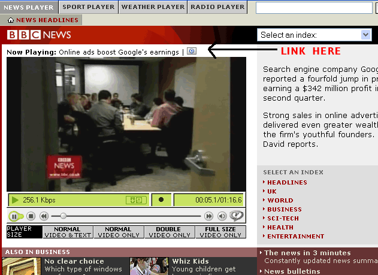

Install:Right Click here and select "Install User Script"
The aim of this script is to allow a user to launch an instance of RealPlayer (or whatever media player you use to play RealMedia files with) for each item on the BBC News Video Player. It should also work for the BBC Sport (video and audio) and BBC Weather players too.
The BBC provide external links for many of their Video Players, such as the Doctor Who Media Player
The Official Real Player plugin provides a link to open in Real Player only, this allows you to open the file in your default player.
After I made a similar script for the BBC Radio Player , I decided to make one for the News Player
It reads the src of the plugin and offers a link to the bottom right of the screen.
GreaseMonkey is an extension for Mozilla Firefox.
I Found Dive Into Greasemonkey very useful in learning how to make Greasemonkey scripts.
Before & After

Any Comments then email me @ 
Install: Right Click here and select "Install User Script"
-----------------------------
Version 0.1
----------------------------
22nd July 2005
-----------------------------
Initial release